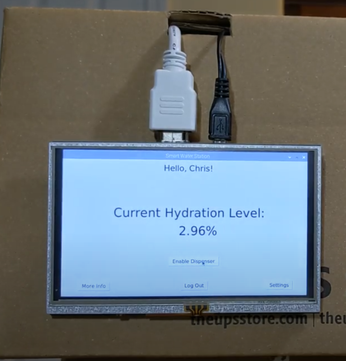
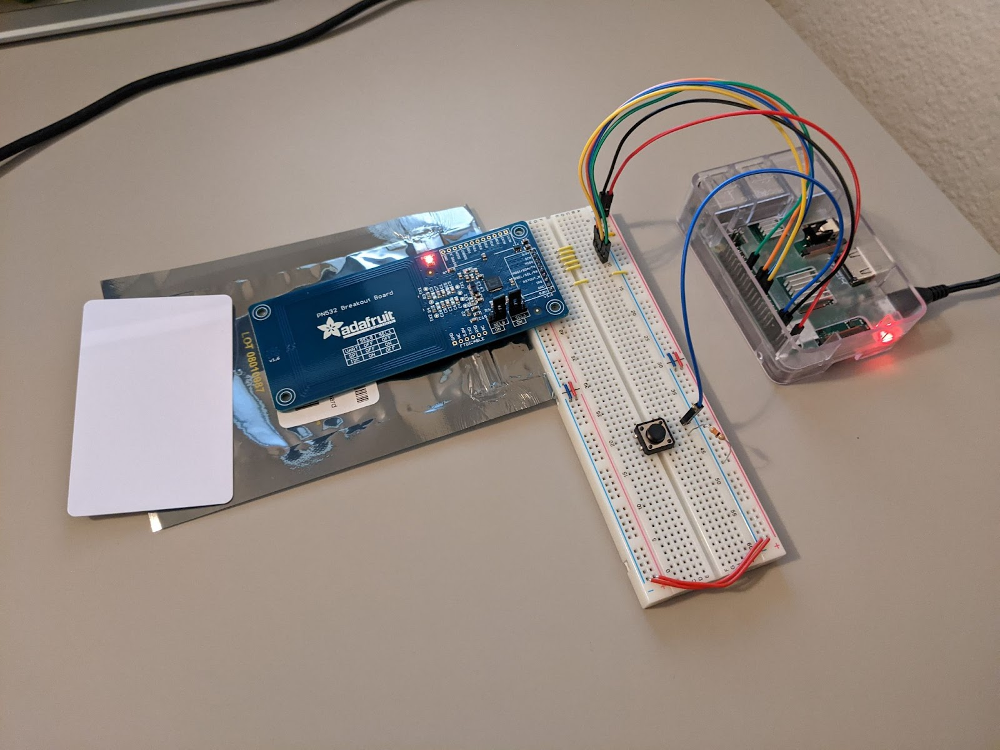
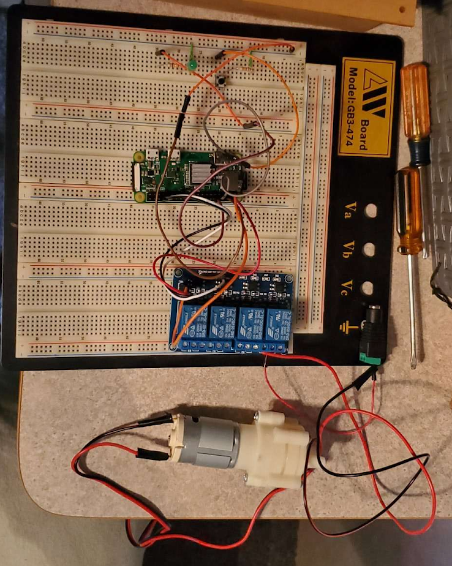

Project Details
Smart Water Station
 The inspiration of this project came from wanting to solve the problem of dehydration. After doing research on human water intake needs compared to survey averages, we realized that lots of people do not drink a sufficent amount of water each day.
Thus the Smart Water Station was born. As a team, we developed three main systems: GUI, RFID, and Pump. The GUI is the brain of the project, where important health data can be tracked and shown to the user in an intuitive manner. The RFID is responsible for maintaining privacy to the user by only allowing access to data if the user has
signed in physically. The Pump is the heart of the project, where it is controlled by the user to dispense water from the water reservoir.
The inspiration of this project came from wanting to solve the problem of dehydration. After doing research on human water intake needs compared to survey averages, we realized that lots of people do not drink a sufficent amount of water each day.
Thus the Smart Water Station was born. As a team, we developed three main systems: GUI, RFID, and Pump. The GUI is the brain of the project, where important health data can be tracked and shown to the user in an intuitive manner. The RFID is responsible for maintaining privacy to the user by only allowing access to data if the user has
signed in physically. The Pump is the heart of the project, where it is controlled by the user to dispense water from the water reservoir.
GUI System
The GUI is shown on the LCD display and is how users can interact with the system. Coded using Python and tkinter libraries, several interactive windows were developed such as the login screen, home screen, health data screen, settings, and instructions. There was careful consideration for how the user interface should feel to the user. For instance, the transition to the next window should be quick and user interface elements should be intuitive and not require a second thought. Additional measures such as accound deletion confirmation screens are added to provide a safety net in the instances of misclicks and other unintentional interactions.
RFID System
The RFID System was designed to maintain user security and privacy. By adding a physical mechanism to determine user authentication, it ensures that data cannot be leaked and that account information cannot be hacked remotely. Since health information and data is indeed very sensitive, security was on the top of the priority list. However, the product should still be easy to use, otherwise no one would want to use it. With RFID cards, the versatile shape of the card allows it to be attached to any water container or other easily accessible location such as a wallet or behind a phone case. Thus, the RFID system is not only secure, but is easy to use.
Pump System
The Pump System is the physical part of the project. This is where the software sends signals to the hardware to make things happen in the real world. A relay is used to provide ample power to the system, as the Raspberry Pi does not have enough power on its own to power the pump. Another aspect of the pump system is the calculations to account for the amount of water dispensed and how close the user is to achieving their daily goal of water intake based on their health data. Since we wanted to lower production costs, instead of using extraneous sensors, we used time, physics, and other formulations to accurately produce the same results.
Links
GitHub LinkYouTube Video Demo